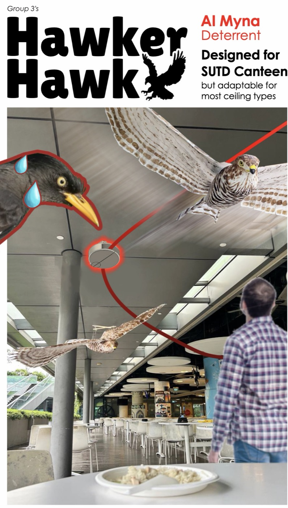
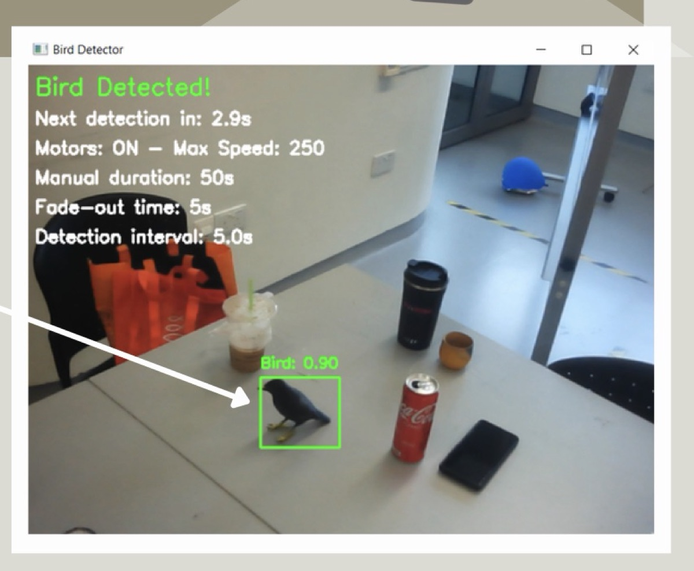
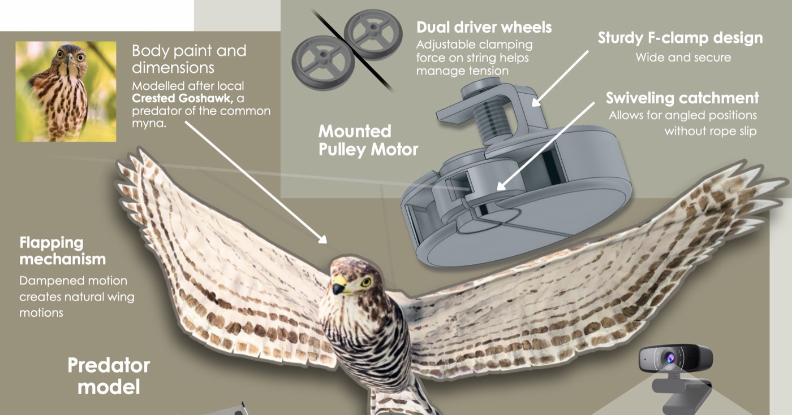
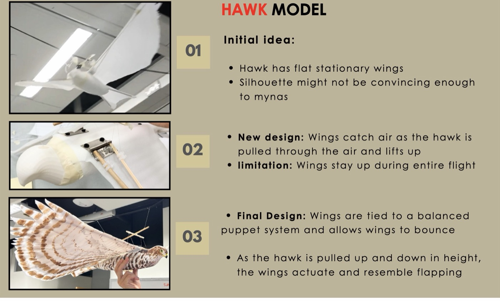
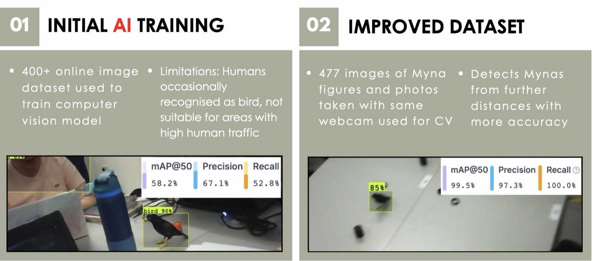

A camera
that scares birds.
Hawker Hawk: a hawk decoy that flies along the canteen ceiling only when computer vision spots a myna.
Same model, better data. Compare the two training sets.
Validation metrics reported by the training platform for each dataset.
Mynas at the canteen
Common mynas are a regular nuisance around the SUTD canteen's tables. We set out to build a deterrent designed for that canteen but adaptable to most ceiling types.
Two things shaped the design early. Mynas are clever: a decoy that moves on a fixed schedule becomes background, and a constantly running motor adds noise and wastes energy. And sound alone can't do it, because our noise test found the range that scares birds (65–85 dBA) overlaps what's comfortable for people (below 75 dBA).
So the deterrent had to be visual, and it had to move only when a myna is actually there.
See a myna, send the hawk
- A webcam watches the tables, running a YOLOv8 model trained on Roboflow.
- When it spots a myna, it signals the motor driver, with a cooldown between detections so it doesn't fire constantly.
- Dual driver wheels in a ceiling-clamped pulley pull a string, flying the hawk along the track.
- The hawk is modelled on the Crested Goshawk, a local predator of the common myna, with wings that flap as it rises and falls.


Three chassis, three wings, two datasets
The track. A pre-built track looping the canteen was hard to install, even in pieces. We switched to a string pulled by modular motor mounts clamped to the ceiling. Early versions let the rope slip out because only wheel friction held it, so we added a guide shaft; its final form has a chamfer and a swivel, so the driver can feed string arriving from a 180° range.

The wings. Flat, stationary wings weren't convincing. Hinged wings that catch air stayed up for the whole flight. The final design ties the wings to a balanced marionette bar, so they flap as the hawk moves up and down.

The vision model. Trained on 400+ online images, it sometimes mistook people for birds, which rules it out for a busy canteen. Retraining on 477 images of 3D-printed myna figures, shot with the same webcam it runs on, fixed that and let it pick up mynas from further away.

A working prototype
SCAN COMPLETEThe final prototype met all of its engineering functions: it mounts on the ceiling, holds the string under tension, flies the hawk with flapping wings, and only runs when the camera sees a myna.
What we didn't prove yet
- The 99.5% is on our own test setup. v2 was trained and validated on 3D-printed myna figures filmed with the deployment webcam. That's why it's so high; it still needs checking against live mynas in a crowded canteen.
- Habituation is a risk, not a result. Triggering only on detection is meant to stop mynas getting used to the hawk, but we didn't run a long-term trial.
- Materials. The PLA filament for the track and motor chassis carried an energy cost we flagged as not ideal.